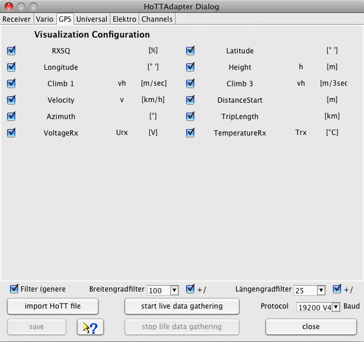
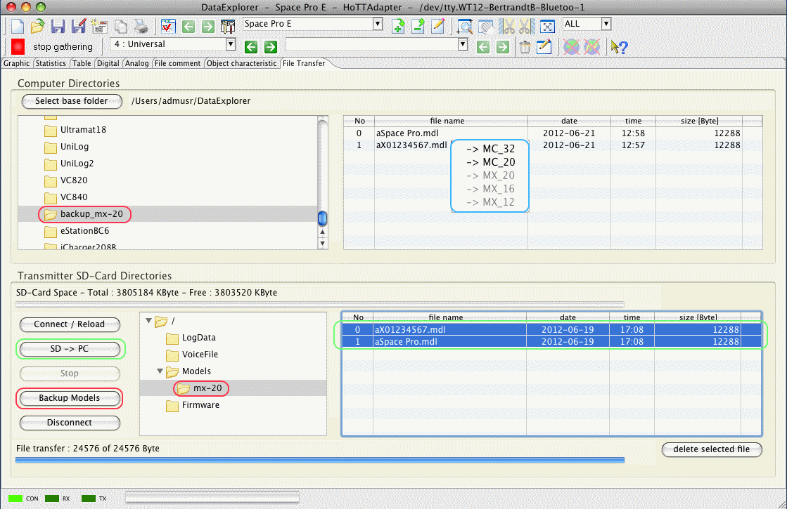

The device dialog is used to configure the visualization of the displayed data. Using the "import HoTT file" button a file selection dialog enable to open new files while applying the current visible visualization configuration dialog. Start/Stop live data gathering uses the configured serial port. Selecting the Baud rate also selects the used protocol type. 115200 Baud for mx-12(#33112), mx-16(#33116), mx-20(#33124), mc-32(#33032), 19200 Baud for mx-12(#4754), mx-16(#4755), mc-19,22,24(#33300 module, #33301 module, #33302 module). The 19200 Baud protocol has support for legacy, as well as new firmware. The new firmware package starts with Smart-Box version 4.0.

Hint: Curves will be switched invisible if they contain only zero as data points, even if selected! This might be corrected by re-selecting the curve in this configuration dialog.
Attention: The selected setting Channels at the HoTTAdapter tool box or at HoTTAdapter2 the configuration Channels will read all data, every 10 msec. Packages, where the value of Rx/Tx = 0 dBm get shown. This packages get called back channel lost packages and get displayed in the curve called Rx->Tx-PLoss. The curve exist in HoTTAdapter only while displaying the receiver data. HoTTAdapter2 will display this curve always and only the Rx/Tx curves are influenced. Lost packages doesn't look complete regarding transmitted values and get skipped normally. Channel data are 16 additional time values which get red while this configuration is active, therefore reading of this data may consume more time.
Tip: Since the HoTTAdapter stores GPS data it is possible to load and display such data in Google Earth using KMZ files. This files can be exported using the file menu or directly launched to an installed Google Earth application. How to do so, refer to Toolbar -> Google Earth. Using HoTTAdapter2 all received measurement values are displayed at a single time scale. There are different configurations which result in different statistical analysis for possible measured motor run times and used up batteries capacity.
Using the file transfer tab enables file transfer using the serial connection to the transmitter from and to SD-Card.

Hint: Serial communication with transmitter and SD-Card only supported with transmitters using 115200 Baud protocol! Due to the slow transfer rate it is not recommended to transfer big files using this protocol. A lot of time would be consumed executing this and the transmitter might be run out of power.
Hint: Microcopter GPS Data are stored as decimal degrees (unit of Latitude and Longitude in [°])! For data visualization of Microcopter data, use the HoTTAdapter with trailing 'M', like Microcopter.